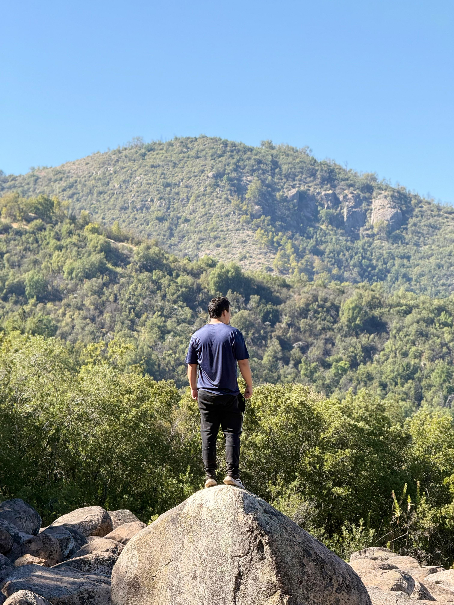

"Bienvenido, viajero. Los antiguos conocimientos musicales aguardan."
"Un santuario de videojuegos didácticos y recursos interactivos donde el ritmo, la lectura en el pentagrama y la teoría musical cobran vida como aventuras mágicas."
Pergaminos encantados listos para despertar. Cada artefacto encierra una disciplina del antiguo lenguaje musical.
Descubre pares de cartas encantadas con figuras y símbolos musicales ocultos bajo sellos arcanos.
Domina la clave de sol e identifica notas en el pentagrama en este desafío visual arcano.
Ejercitador melódico interactivo para dominar las notas sagradas grabadas en el pentagrama.
La base del latido: sigue el pulso constante del metrónomo de la naturaleza.
"Soy profesor de educación musical con 5 años de experiencia en el aula. Como aficionado a la programación, he encontrado mi pasión en el desarrollo de videojuegos y herramientas didácticas."
Mi principal objetivo es transformar el aprendizaje del solfeo, el ritmo y la teoría en una experiencia práctica, interactiva y muy entretenida para mis estudiantes.

Luthier Digital & Docente
¿Deseas intercambiar ideas sobre interactividad, música o invocar una nueva aventura?
Tu carta viaja entre los árboles. El bardo te responderá a la brevedad del viento.